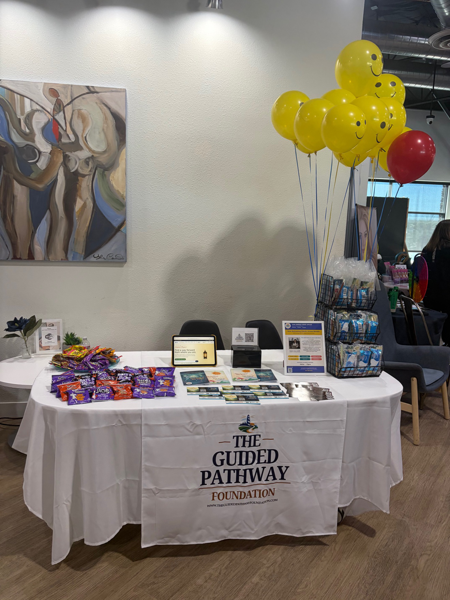
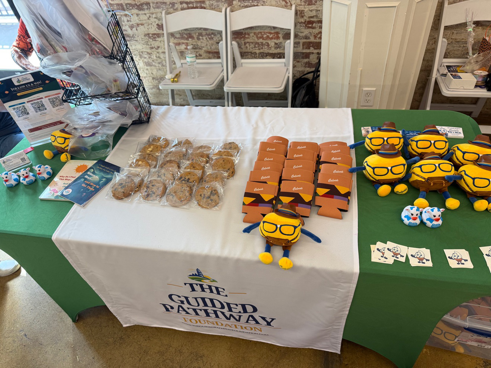

Organizational Wellness Distribution Program
Bringing emotional intelligence tools into the organizations that shape people's lives.
Tools That Meet People Where They Are
Every day, the people inside your organization are navigating stress, pressure and emotional challenges. Most of them will never ask for help, but many of them will engage with a resource that meets them where they are: without barriers, without stigma and without requiring them to raise their hand first.
The Organizational Wellness Distribution Program is a structured partnership model designed for businesses, schools, nonprofits and institutions to place emotional intelligence tools directly into the hands of the people they serve, on site and at home.
Organizations receive materials in bulk and integrate them directly into their programs, culture and daily operations as tools for education, wellness and staff support.

On Site and At Home
Two delivery lanes that can be used together or independently, depending on your organization's needs and goals.
On Site Support for Organizations
- Employee wellness initiatives and workplace programs
- Staff emotional support and professional development
- School based student programming
- Nonprofit participant and client services
- Team based reflection and group learning
- Community events and organizational outreach
Take Home Access for Individuals and Families
The books travel beyond the building, extending the impact of organizational support into people's personal lives, homes and independent routines.
- Students bringing books home for family use
- Employees accessing tools outside work hours
- Families receiving books through outreach programs
- Clients taking resources home from nonprofit sessions
- Inclusion in take home wellness kits
- Community members receiving personal copies at events
What Makes This Program Different
- Built with professional insight. Every resource is purposefully built and informed by emotional wellness research, not generic self help material.
- Accessible at scale. Organizations purchase materials at volume, making emotional intelligence tools accessible without placing the cost burden on individuals.
- Early by design. People develop emotional awareness and practical skills before challenges escalate. That is the entire point.
- Sized to your organization. From a ten person nonprofit to a regional school district, the program meets your organization at whatever scale makes sense right now.

Organizations We Work With
The people reached through these partnerships include employees, staff, students, families, clients, participants, caregivers and community members.
Why Organizations Are the Delivery Point
Most people will not seek out emotional wellness resources on their own. But they will engage with something their employer offered, something their school provided or something their community organization put in their hands. That quiet, low barrier moment of access is where prevention actually happens.
Partnership inquiries are welcome at any scale, from a pilot distribution for a single department to a full organizational rollout. The process starts with a conversation.